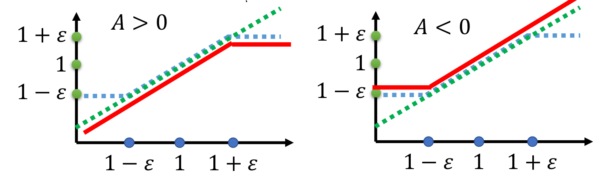
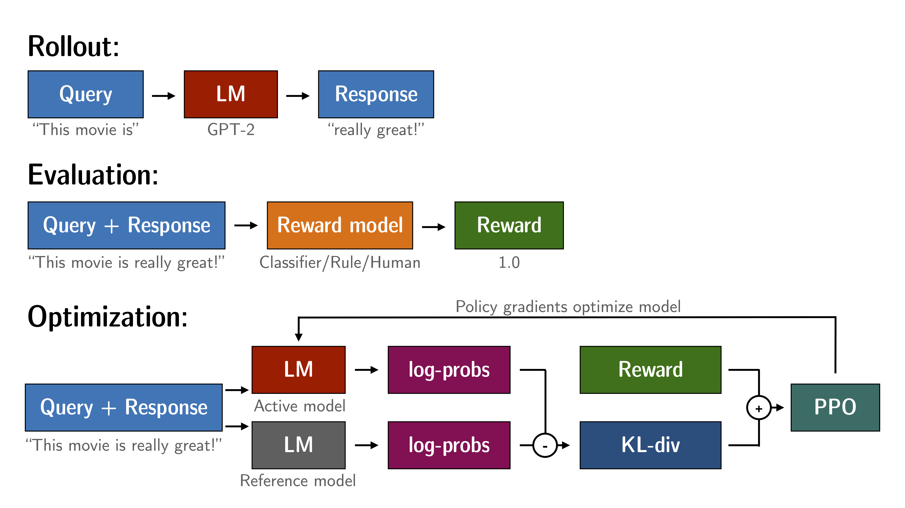

Proximal Policy Optimization (PPO) and RLHF
Feb. 24, 2025 · Qiyao Wang · Topic #RL
TRPO
TRPO: Trust Region Policy Optimization。在 $J(\theta)$ 更新参数时，对新旧策略之间的分布差异进行特殊的约束，具体推导
$$ J_{TRPO}^{\theta'}(\theta)=\mathbb{E}_{(s_t,a_t)\sim\pi_{\theta'}}[\frac{p_\theta(a_t\mid s_t)}{p_{\theta'}(a_t\mid s_t)}A^{\theta'}(s_t,a_t)] $$ $$ KL(\theta,\theta')<\delta $$PPO
PPO: Proximal Policy Optimization
PPO 和 TRPO 的思想一致，也需要对新旧 policy 分布之间的距离进行约束。需要注意的是，这里指的距离不是 policy model 的参数之间的距离，而是 policy model 的 behavior 之间的距离。
$$ \begin{aligned} J_{PPO}^{\theta'}(\theta)&=J^{\theta'}(\theta-\beta KL(\theta,\theta'))\\ &=\mathbb{E}_{(s_t,a_t)\sim\pi_{\theta'}}[\frac{p_\theta(a_t\mid s_t)}{p_{\theta'}(a_t\mid s_t)}A^{\theta'}(s_t,a_t)] \end{aligned} $$在 Off-Policy 中，将从 $\theta'=\theta_{old}$ 里面 sample 大量的数据用于 policy model 的训练，但有一个问题是，$\theta_{old}$ 的分布与 $theta$ 存在差异，这会导致 training 和 testing 的分布不一致吗？上式中其实包含了 Importance Sampling，通过一个系数的变化，来解决这样的分布差异。
$$ \mathbb{E}_{x\sim p}[f(x)]=\mathbb{E}_{x\sim q}[f(x)\frac{p(x)}{q(x)}] $$PPO-Clip
对 PPO 算法进行改进，将 Importance Sampling 中的权重视为两分布差异的估计，利用剪枝的方法来进行分布之间的约束。
$$ J_{PPO-CLIP}^{\theta'}(\theta)=\sum_{(s_t,a_t)}\min(\frac{p_\theta(a_t\mid s_t)}{p_{\theta'}(a_t\mid s_t)}A^{\theta'}A^{\theta'}(s_t,a_t),{\rm clip}(\frac{p_\theta(a_t\mid s_t)}{p_{\theta'}(a_t\mid s_t)}A^{\theta'},1-\varepsilon,1+\varepsilon)A^{\theta'}(s_t,a_t)) $$
当比值 $\frac{p_\theta(a_t\mid s_t)}{p_{\theta'}}>1+\varepsilon$ 时，将其裁剪为 $1+\varepsilon$；当比值 $\frac{p_\theta(a_t\mid s_t)}{p_{\theta'}}<1-\varepsilon$ 时，会被裁剪为 $1-\varepsilon$。
RLHF
基于 trl 库对 LLM 进行 PPO 训练的实战，详细内容。
下图为各模块之间的联系和整体的过程。

Reference
Contact
There may be some errors present. If you find any, please feel free to contact me at wangqiyao25@mails.ucas.ac.cn. I would appreciate it!